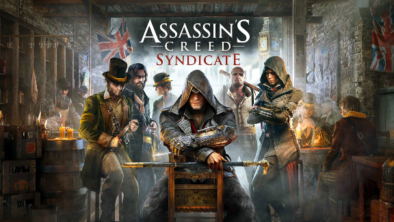

Acasă

Efectele pozitive ale jocurilor video
Scopul initial al jocurilor video a fost unul pozitiv, recreativ și de divertisment.Jocurile video dezvoltă reflexele, stimulează activitatea cerebrală, dezvoltă imaginatia și cel mai important: facilitează învățarea.
Unul dintre cele mai cunoscute astfel de jocuri, care în ultimul an a devenit chiar o metodă legitimă de învățare în școli este Assassin's Creed Acesta antrenează tinerilor capacitatea de colaborare, învățare și gândire critică.
Cercetatorii sugerează că jocurile de acţiune exercită un rol de simulator pentru procesul de luare a deciziilor de către jucatorilor, oferidu-le acestora mai multe şanse de a gestiona informaţiile din mediul lor şi forţându-i să reacţioneze în consecinţă.
- Joc video istoric de acțiune-aventură
- Nominalizat la premiul "Jocul anului"
- Grafică excelentă
- Instrument de predare
- Personaje istorice exceptionale
Nimic nu este adevărat, totul este posibil. Numai o minte lipsită de probleme este capabilă să recunoască frumusețea haotică a lumii in care trăim. Acesta este cel mai mare atu al nostru. -Oliver Bowden (Assassin's Creed)